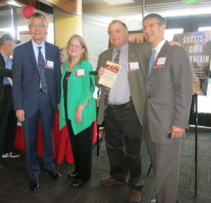
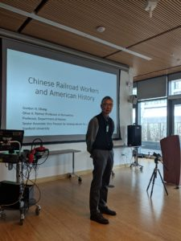
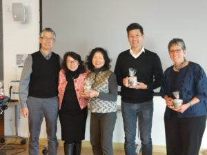
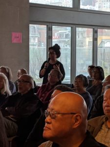
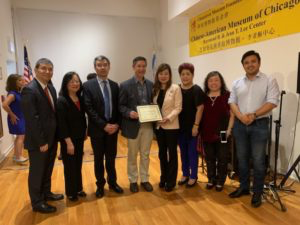

Upcoming and Recent Public Talks

Upcoming events featuring the Chinese Railroad Workers of North America Project.
Capital Public Radio Live Event, Auburn, CA., with Gordon H. Chang. Gordon H. Chang will be interviewed by Beth Ruyak, host of Insight on Capital Public Radio. The event is sponsored by the “Auburn One Book One Community” series. [Scroll to “Events” for location.] — Please note that this event has been postponed due to the general COVID-19 public health and safety protocol. Updated information will be provided when available.
Recent past presentations by Gordon H. Chang
Gordon H. Chang continues a full schedule of invited lectures. He has delivered public lectures on his publications and the Chinese Railroad Workers in North America Project at the Oakland Asian Cultural Center, Oakland, California; the Blackhawk Museum, Danville, California; The Community Library, Ketchum, Idaho; The King’s English Bookshop, Salt Lake City, Utah; the California State Railroad Museum, at the Chinese Historical Society of America, San Francisco; the Institute for Study of California and the West, Huntington Library-University of Southern California; Annual Conference of the Association of California Archivists, Long Beach, CA; Annual Conference of the Committee of 100, New York City; the 2019 Litquake Literary Festival at the Book Club of California; Southern Methodist University (video); UCLA Asia Pacific Center, Los Angeles; and at additional public and by-invitation events.
Gordon H. Chang presented to large audiences at the SPIKE 150 conference.
Audio recording of Gordon H. Chang, sponsored by SPIKE 150, Utah Museum of Fine Arts, Salt Lake City, Utah:



Gordon H. Chang presenting in San Francisco, May 2019
Recent Presentations by Shelley Fisher Fishkin
December 3, 2019, Vi at Palo Alto.
June 5-9, 2019, International Symposium on the Transnational Life of the Chinese Railroad Workers in North America, Wuyi University, Jiangmen, China.
May 9, 2019, CGTN.
May 7, 2019, Shelley Fisher Fishkin presented to audiences at Golden Spike 150, Weber State University Special Collections, Union Station at Ogden, Utah.
August 28, 2019, Palo Alto Jewish Community Center.
Recent Presentations by Hilton Obenzinger
September 18, 2019, Channing House, Palo Alto, CA.
June 5-9, 2019, International Symposium on the Transnational Life of the Chinese Railroad Workers in North America, Wuyi University, Jiangmen, China.
April 6, 2019, C-SPAN.
Recent Presentations by Roland Hsu
October 29, 2022, Donner Memorial State Park, Truckee, CA. Lecture and discussion by Roland Hsu. This presentation was sponsored by the Donner Summit Historical Society, the Golden Drift Historical Society, Sierra College / Tahoe-Truckee Campus, the Trucker Donner Railroad Society, the Chinese American Museum of Northern California, and the Truckee-Donner Historical Society. This talk was provided for the benefit of the California State Parks, by Roland Hsu, Director of Research for the Chinese Railroad Workers in North America Project at Stanford University.
May 28, 2020, California State Railroad Museum, Sacramento, CA. Lecture and discussion by Roland Hsu. This special presentation provided to the California State Railroad Museum’s school curriculum modules, by Roland Hsu, Director of Research for the Chinese Railroad Workers in North America Project at Stanford University.
May 16, 2020, Saratoga Library, Saratoga, CA..
In celebration of Asian Pacific Islander Heritage Month, Dr. Roland Hsu discusses the contributions of Chinese railroad workers to the transcontinental railroad, and to unifying the United States. Lecture and Question/Answer sessions.
October 7, 2019 at Channing House, Palo Alto, California.
August 12, 2019, WVXU (National Public Radio), “The Forgotten History of Chinese Railroad Workers” radio interview with Roland Hsu, and Felicity Tao (Greater Cincinnati Cultural Exchange Association).
